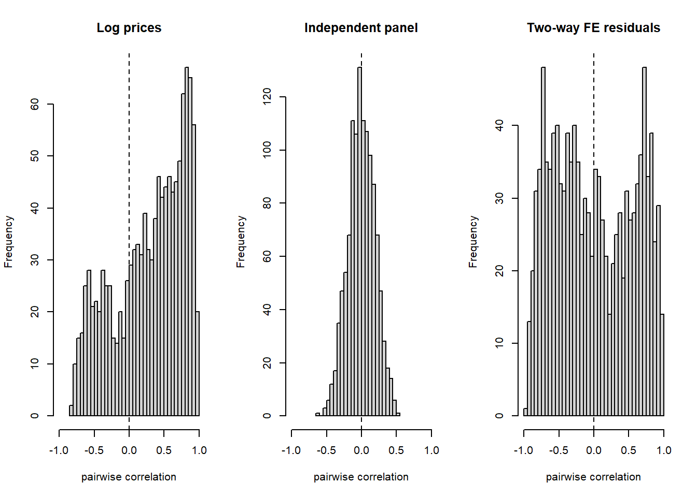
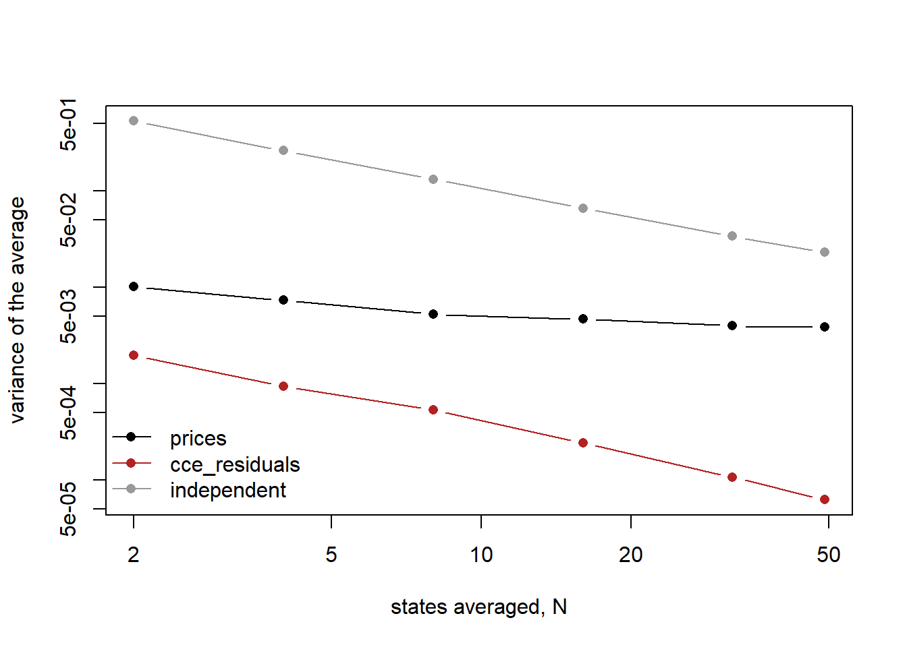
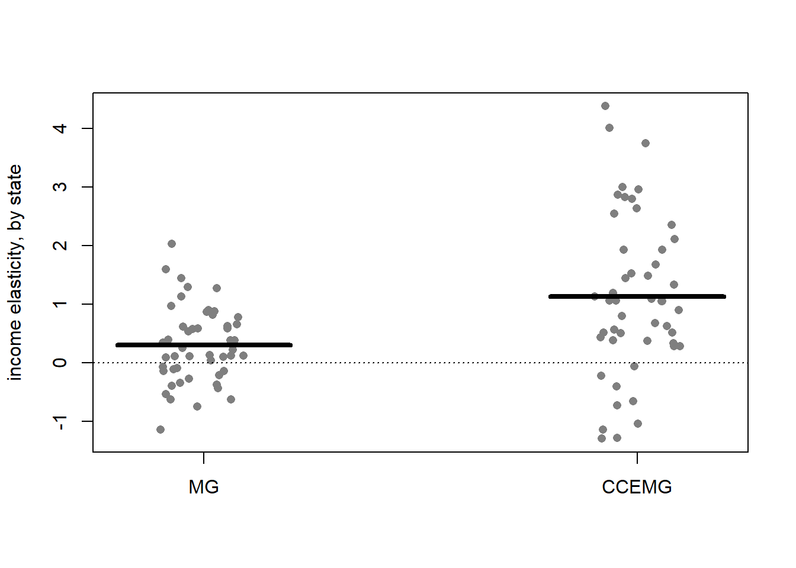

devtools::load_all(quiet = TRUE)
data("HousePricesUS", package = "pder")
hp <- plm::pdata.frame(HousePricesUS)
idx <- plm::index(hp)
# plm stores a panel stacked long; tapply folds it back to N x T.
as_matrix <- function(v) {
m <- tapply(as.numeric(v), list(idx[[1]], idx[[2]]), identity)
m[, colSums(is.na(m)) == 0, drop = FALSE]
}3 Cross-sectional dependence
A bank pricing a thirty-year mortgage in Ohio and one in Texas does not treat them as two unrelated bets. Both react when the Federal Reserve moves, and both calm down in the same quiet years. A model that scores them as independent draws is quietly wrong about how much is actually known.
Cross-sectional dependence is the name for that shared shock: the error in one unit’s equation is correlated with the error in another’s, because both are exposed to a force the model has not captured. The running example is HousePricesUS (Holly et al. 2010), 49 US states from 1975 to 2003, shipped in pder (Croissant and Millo 2019).
This chapter assumes the panel’s shape is already settled — how many units, how many periods, how balanced (panel shape) — and asks a different question: do the states move together more than chance allows, how strongly, and what an estimate should do about it.
In this chapter.
- Is it there? Test whether the states move together more than chance allows, with Pesaran’s CD and three later refinements of it (the CD test; theory in cross-sectional dependence).
- How strong? The exponent α counts how many states a shock reaches — a fixed share, or a shrinking one (the exponent α; same theory note).
- What to do about it. Strong dependence means a common factor that fixed effects cannot remove. Proxy it with cross-state averages: common correlated effects, CCE (CCE; theory in common factors and CCE).
3.1 The CD test
Question. Do house prices in the 49 states move together more than chance allows?
Intuition. Take any two states and correlate their log prices over the 29 years. Do it for all 1 176 pairs. If the states were independent, those correlations would scatter around zero, some positive and some negative, and their average would sit close to zero. If one common force moves every state, the average sits well above zero. Pesaran’s CD statistic is that average, scaled so that it is a standard normal when the states are independent (Pesaran 2004).
Why the signed average is both the test’s virtue and its blind spot, and what its null really is: cross-sectional dependence.
With \(\hat\rho_{ij}\) the correlation between units i and j over the T periods (Pesaran 2015, eq. 29.76, p. 786):
\[ CD = \sqrt{\frac{2T}{N(N-1)}} \sum_{i<j} \hat\rho_{ij} \;\xrightarrow{d}\; N(0,1). \]
It sums the correlations with their signs, not their squares. That keeps it centred at zero for any T, however large N is. It also makes the test blind whenever positive and negative correlations cancel.
The test. CD (Pesaran 2004). Null: the units are independent, or more precisely, any dependence among them is too weak to survive averaging. A rejection means a pervasive, same-signed co-movement.
Run it. Log house prices as an N × T matrix, built with as_matrix() from the setup chunk. dcce::pcd_test (Wasseja 2026) computes CD and the three refinements met later in this section:
logp <- as_matrix(log(hp$price))
dcce::pcd_test(logp, test = "pesaran")
Cross-Sectional Dependence Tests
================================
N = 49, T = 29
CD statistic = 53.2625 p-value = 0.0000Two comparison panels. First an independent one of the same shape. Then the residuals of a two-way fixed-effects regression of log price on log income, a state effect and a year effect, which removes everything fixed about a state and everything common to a year (road map):
set.seed(1)
iid <- matrix(rnorm(49 * 29), nrow = 49)
fe <- plm::plm(log(price) ~ log(income), data = HousePricesUS,
model = "within", effect = "twoways")
e <- as_matrix(residuals(fe))
dcce::pcd_test(iid, test = "pesaran")
dcce::pcd_test(e, test = "pesaran")
Cross-Sectional Dependence Tests
================================
N = 49, T = 29
CD statistic = 0.2957 p-value = 0.7675
Cross-Sectional Dependence Tests
================================
N = 49, T = 29
CD statistic = 0.0229 p-value = 0.9817The 1 176 correlations that each statistic averages:
pair_cor <- function(m) {
r <- stats::cor(t(m))
r[lower.tri(r)]
}
op <- graphics::par(mfrow = c(1, 3))
graphics::hist(pair_cor(logp), breaks = 30, xlim = c(-1, 1),
main = "Log prices", xlab = "pairwise correlation")
graphics::abline(v = 0, lty = 2)
graphics::hist(pair_cor(iid), breaks = 30, xlim = c(-1, 1),
main = "Independent panel", xlab = "pairwise correlation")
graphics::abline(v = 0, lty = 2)
graphics::hist(pair_cor(e), breaks = 30, xlim = c(-1, 1),
main = "Two-way FE residuals", xlab = "pairwise correlation")
graphics::abline(v = 0, lty = 2)
graphics::par(op)Two averages summarise each histogram: the signed mean \(\bar\rho\), which CD is built on, and the mean of absolute values \(\overline{\lvert\rho\rvert}\), which ignores sign:
rho_bars <- function(m) {
r <- pair_cor(m)
c(rho_bar = mean(r), abs_rho_bar = mean(abs(r)))
}
rbind(prices = rho_bars(logp), independent = rho_bars(iid),
fe_residuals = rho_bars(e)) rho_bar abs_rho_bar
prices 0.288415690 0.5062550
independent 0.001601068 0.1534542
fe_residuals 0.000123939 0.4914956Read it.
- Rejects (log prices). z = 53.26. The pile of correlations sits to the right of zero, \(\bar\rho\) = 0.29. So: the states share a common force, and whatever is estimated on this panel has to allow for it.
- Does not reject (independent panel). z inside ±1.96, correlations scattered symmetrically around zero. So: this is what “no dependence” looks like, and CD reads it right.
- Misleads (two-way FE residuals). z = 0.02, p = 0.98: a cleaner acceptance than the genuine null above. But the histogram is as wide as the raw one, and \(\overline{\lvert\rho\rvert}\) barely moves, 0.51 to 0.49. So: the year effect forces the residuals to sum to zero across states in every year, which makes their correlations cancel in sign. CD sees nothing because nothing signed is left, not because the dependence is gone (Croissant and Millo 2019, sec. 10.1.2.2).
Three refinements. Each attacks CD’s blindness from a different side. None is in plm; all three are in dcce::pcd_test.
| Test | Source | What it changes |
|---|---|---|
| CDw | Juodis and Reese (2022) | Random ±1 weights on the units, so a model’s estimated year effects or averages cannot push CD off zero |
| PEA | Fan et al. (2015) | Adds a term that fires when a few pairs are strongly correlated, however the rest cancel |
| CD* | Pesaran and Xie (2021) | Removes the bias from estimated common factors, so it stays valid on residuals |
The same three panels, one call per test. CDw draws random weights, so it is the only one that needs a seed:
set.seed(1)
dcce::pcd_test(logp, test = "cdw")
dcce::pcd_test(logp, test = "pea")
dcce::pcd_test(logp, test = "cdstar")
Cross-Sectional Dependence Tests
================================
N = 49, T = 29
CDw statistic = -0.1153 p-value = 0.9082
Cross-Sectional Dependence Tests
================================
N = 49, T = 29
PEA statistic = 308.4761 p-value = 0.0000
Cross-Sectional Dependence Tests
================================
N = 49, T = 29
CD* statistic = 5703.2307 p-value = 0.0000set.seed(1)
dcce::pcd_test(iid, test = "cdw")
dcce::pcd_test(iid, test = "pea")
dcce::pcd_test(iid, test = "cdstar")
Cross-Sectional Dependence Tests
================================
N = 49, T = 29
CDw statistic = -0.0241 p-value = 0.9808
Cross-Sectional Dependence Tests
================================
N = 49, T = 29
PEA statistic = 0.2957 p-value = 0.7675
Cross-Sectional Dependence Tests
================================
N = 49, T = 29
CD* statistic = 0.7395 p-value = 0.4596set.seed(1)
dcce::pcd_test(e, test = "cdw")
dcce::pcd_test(e, test = "pea")
dcce::pcd_test(e, test = "cdstar")
Cross-Sectional Dependence Tests
================================
N = 49, T = 29
CDw statistic = -0.1237 p-value = 0.9016
Cross-Sectional Dependence Tests
================================
N = 49, T = 29
PEA statistic = 217.8910 p-value = 0.0000
Cross-Sectional Dependence Tests
================================
N = 49, T = 29
CD* statistic = 6.5197 p-value = 0.0000Read them.
- On the independent panel, all three sit inside ±1.96, as CD did. So: none raises false alarms here.
- On the FE residuals, PEA and CD* both reject while CD could not. So: the dependence CD lost to sign cancellation is still there, and these two see it.
- CDw does not reject even on raw prices, where the dependence is not in doubt. So: read CDw as a guard against false positives, never as evidence of absence. CD* is the one that keeps power on raw series and on residuals alike.
Next. CD rejects: ask how strong the dependence is, the exponent α. CD does not reject: do not stop. Read \(\overline{\lvert\rho\rvert}\), and if the units sit on a map, ask whether the dependence follows it (does it follow the map).
NoteRecipe
# m: an N x T matrix, one row per unit; y: a pseries or a one-sided formula.
dcce::pcd_test(m, test = "pesaran") # CD
plm::pcdtest(y, test = "cd") # the same statistic in plm
dcce::pcd_test(m, test = "cdstar") # on residuals from a model with
# time effects or CCE averages
CautionPitfalls
Residuals from any model with estimated period effects. Two-way FE and CCE both estimate something per period, and Juodis and Reese (2022) show that plain CD then diverges as T grows even when the dependence has been handled. On such residuals use CD* or CDw, never CD alone.
plm::pcdtest on a formula needs library(plm). It builds a call to plm() by its bare name, which the :: prefix does not make visible.
CDw depends on its seed. Its weights are random draws; set the seed and report it.
TipBook check
dcce::pcd_test(test = "pesaran") should equal plm::pcdtest(test = "cd"), the implementation Croissant and Millo (2019, sec. 4.4) document:
# Attached because pcdtest() on a formula calls plm() by its bare name.
library(plm)
plm::pcdtest(log(price) ~ 1, data = HousePricesUS, test = "cd")
Pesaran CD test for cross-sectional dependence in panels
data: log(price) ~ 1
z = 53.262, p-value < 2.2e-16
alternative hypothesis: cross-sectional dependencez = 53.26 on both, so the new package’s CD is the one the book describes, and its other three statistics are read on that credit.
3.2 The exponent α
Question. The states move together. Is that a national force that reaches every state, or a local one that reaches a few neighbours?
Intuition. Average log prices across states. If the co-movement is national, averaging over more states does not calm the average: every state carries the same shock, so adding states adds the same thing again. If the co-movement is local, each state shares its shock with a few others only, and averaging over many states washes it out, the way averaging independent draws does. The exponent α measures how fast averaging washes the co-movement out. At α = 1 it never does: strong dependence. At α = ½ it does as fast as for independent draws: weak dependence (Bailey et al. 2016).
Why an estimate cares: a year effect removes a shock that hits every state equally. A national shock that hits each state to its own degree, with state-specific loadings, survives it, and if that shock also moves income it biases the slope (road map). α says whether such a shock is there to worry about.
What α counts, how to read it as an effective sample size, and why the CD test cannot stand in for it: cross-sectional dependence.
For the cross-section average \(\bar z_t\) of N units (Bailey et al. 2016; Pesaran 2015, eq. 29.6, p. 754):
\[ \operatorname{Var}(\bar z_t) = \kappa_0 N^{2(\alpha-1)} + \kappa_1 N^{-1} + O(N^{\alpha-2}), \qquad \tfrac12 < \alpha \le 1. \]
The second term is what independence gives, \(\sigma^2/N\). The first is the co-movement. On log scales the variance of the average falls with N at slope \(2(\alpha - 1)\): flat at α = 1, as steep as independence, −1, at α = ½.
The estimator. Two, in dcce::csd_exp (Wasseja 2026). The variable method (Bailey et al. 2016) inverts the equation above. The residual method (Bailey et al. 2019) counts the pairwise correlations that survive a significance threshold, and is the one to use on most series (see Pitfalls). Neither is a test: α is a number to read, with a bootstrap standard error.
Run it. Log prices, as the N × T matrix logp of the previous section:
set.seed(1)
dcce::csd_exp(logp, use_residuals = TRUE)
Exponent of Cross-Sectional Dependence
======================================
Method : BKP (2019)
N = 49, T = 29
alpha = 0.8330 (SE = 0.0189)
95% CI: [0.8020, 0.8729]Now remove the national force and ask again. CCEMG, the estimator of the next section, adds cross-state averages to each state’s regression, which soaks up a common shock whatever each state’s loading. Its residuals are the panel with that shock taken out:
# pcce() builds a call to plm(), so plm must be attached, not just namespaced.
library(plm)
ccemg <- plm::pcce(log(price) ~ log(income), data = HousePricesUS,
model = "mg")
e_cce <- as_matrix(residuals(ccemg))
set.seed(1)
dcce::csd_exp(e_cce, use_residuals = TRUE)
Exponent of Cross-Sectional Dependence
======================================
Method : BKP (2019)
N = 49, T = 29
alpha = 0.5069 (SE = 0.0870)
95% CI: [0.3503, 0.6988]The variance equation can be watched directly. Average random subsets of 2 to 49 states and see how fast the variance of the average falls:
var_avg <- function(m, n, reps = 200) {
mean(replicate(reps, var(colMeans(m[sample(nrow(m), n), , drop = FALSE]))))
}
ns <- c(2, 4, 8, 16, 32, 49)
set.seed(1)
v <- cbind(
prices = sapply(ns, \(n) var_avg(logp, n)),
cce_residuals = sapply(ns, \(n) var_avg(e_cce, n)),
independent = sapply(ns, \(n) var_avg(iid, n))
)
cols <- c("black", "firebrick", "grey60")
graphics::matplot(ns, v, log = "xy", type = "b", pch = 16, lty = 1,
col = cols, xlab = "states averaged, N",
ylab = "variance of the average")
graphics::legend("bottomleft", colnames(v), col = cols, pch = 16, lty = 1,
bty = "n")
The slope of each line, turned into α:
slope <- function(v) coef(lm(log(v) ~ log(ns)))[[2]]
round(1 + apply(v, 2, slope) / 2, 2) prices cce_residuals independent
0.85 0.47 0.51 Read it.
- Strong (log prices). α = 0.83, far above ½, and the price line is nearly flat: averaging 49 states calms the average little more than averaging 8. So: a national force with state-specific loadings. Year effects will not remove it; CCE will.
- Weak (CCEMG residuals). α = 0.51, the floor, and the line falls as steeply as the independent panel’s. So: once the national force is out, what is left is local. Only now is a spatial model a legitimate question (does it follow the map).
- The picture’s own estimate. The slopes give 0.85, 0.47 and 0.51, next to 0.83 and 0.51 from the residual method. So: α is not a black box; it is the slope of this picture with a finite-N correction, and that correction is where the variable method can fail (Pitfalls).
Next. α near 1: common correlated effects. α near ½: fixed effects are consistent; ask whether the dependence follows a map (does it follow the map). Either way, do not route on α alone: the spatial chapter’s randomised-W test is the corroboration.
NoteRecipe
# m: an N x T matrix, one row per unit, no missing cells.
set.seed(1)
dcce::csd_exp(m, use_residuals = TRUE) # residual method, bootstrap SE
dcce::csd_exp(m) # variable method
CautionPitfalls
The variable method collapses when the average is calm. It is only informative when the common component survives averaging. price is an index re-based to 100 in 1980 for every state, so the cross-state average of log price moves in a band of 4.51–4.76 and its variance is small. The correction for \(\kappa_1 N^{-1}\) then dominates and the estimate collapses onto ½, the opposite of what CD and the residual method report. On log real GDP in pwt8, whose average carries the common trend, it works:
data("pwt8", package = "dcce")
lgdp <- do.call(rbind, by(pwt8, pwt8$country, \(d) d$log_rgdpo))
lgdp <- lgdp[, colSums(is.na(lgdp)) == 0, drop = FALSE]
c(hpus = var(colMeans(logp)), pwt8 = var(colMeans(lgdp)))
c(hpus = dcce::csd_exp(logp)$alpha, pwt8 = dcce::csd_exp(lgdp)$alpha) hpus pwt8
0.003875703 0.052595668
hpus pwt8
0.4997746 0.8348299 Thirteen times more variance in the average is the whole difference. Prefer the residual method unless the series is a level whose average carries the common trend.
The two methods report standard errors on different footings. For the variable method csd_exp returns se = 1/(2 ln N √N), a function of N alone: two panels with the same N get the same SE whatever they contain. The residual method bootstraps, so its SE and its asymmetric interval respond to the data, and to the seed. Read the first as a point estimate only.
TipBook check
The dcce vignette (Wasseja 2026) prints α = 0.8348, SE = 0.0114 and a 95% CI of [0.8124, 0.8573] for log real GDP on pwt8, 93 countries over 48 years, with the variable method:
a <- dcce::csd_exp(lgdp)
data.frame(
vignette = c(0.8348, 0.0114, 0.8124, 0.8573),
ours = c(a$alpha, a$se, a$ci),
row.names = c("alpha", "se", "ci_lo", "ci_hi")
) |> round(4)
1 / (2 * log(a$N) * sqrt(a$N)) vignette ours
alpha 0.8348 0.8348
se 0.0114 0.0114
ci_lo 0.8124 0.8124
ci_hi 0.8573 0.8573
[1] 0.01143882The estimate reproduces to four decimals, and the last line confirms that the printed SE is exactly \(1/(2\ln N\sqrt{N})\). Bailey et al. (2016) report α in the 0.77–0.92 range for macroeconomic series, which brackets both the 0.8348 here and the 0.83 on house prices above.
3.3 Common correlated effects
Question. Income rises 10%. How much do house prices rise, once the national forces that move both are allowed for?
Intuition. The national force is unobserved. Its footprint is not: every state carries it, so the cross-state average of prices, and of incomes, carries it too, with the state-specific noise averaged away. Put those averages into each state’s regression as extra regressors, and the force is controlled for without ever being measured. That is common correlated effects, CCE (Pesaran 2006). Each state gets its own coefficient on the averages, so each can feel the force to its own degree, which is exactly what a year effect cannot allow.
Why the averages span the space of the unobserved factors, and what CCE cannot fix: common factors and CCE.
State i in year t is fitted as
\[ y_{it} = \alpha_i + \beta_i x_{it} + c_i \bar y_t + d_i \bar x_t + e_{it}, \]
with \(\bar y_t\) and \(\bar x_t\) the cross-state averages. CCEMG averages the 49 slopes \(\hat\beta_i\) (Pesaran 2015, eq. 29.37, p. 767). CCEP pools the states into one slope β, keeping the state-specific \(c_i\) and \(d_i\) (Pesaran 2015, eq. 29.41, p. 768).
The estimators. Three, so that the averages’ effect is visible. MG, mean group: the 49 state regressions without the averages, then the mean slope. CCEMG: the same with the averages. CCEP: the pooled version. No test here; the evidence is how the estimates move.
Run it. plm::pmg gives MG and, with model = "cmg", CCEMG; plm::pcce gives CCEMG again and is the only way to get CCEP (Croissant and Millo 2019, sec. 8.3.2.1):
# pmg() and pcce() build a call to plm(), so plm must be attached, not just
# namespaced.
library(plm)
mg <- plm::pmg(log(price) ~ log(income), data = HousePricesUS, model = "mg")
cmg <- plm::pmg(log(price) ~ log(income), data = HousePricesUS, model = "cmg")
coef(mg)
coef(cmg)(Intercept) log(income)
3.8498054 0.3018117
(Intercept) log(income) y.bar log(income).bar
-0.1147135 1.1354048 1.0465063 -1.1954172 ccemg <- plm::pcce(log(price) ~ log(income), data = HousePricesUS, model = "mg")
ccep <- plm::pcce(log(price) ~ log(income), data = HousePricesUS, model = "p")
summary(ccemg)
summary(ccep)Common Correlated Effects Mean Groups model
Call:
plm::pcce(formula = log(price) ~ log(income), data = HousePricesUS,
model = "mg")
Balanced Panel: n = 49, T = 29, N = 1421
Residuals:
Min. 1st Qu. Median 3rd Qu. Max.
-0.2374376 -0.0354899 0.0002718 0.0363912 0.2242333
Coefficients:
Estimate Std. Error z-value Pr(>|z|)
log(income) 1.13540 0.19546 5.809 6.285e-09 ***
---
Signif. codes: 0 '***' 0.001 '**' 0.01 '*' 0.05 '.' 0.1 ' ' 1
Total Sum of Squares: 47.234
Residual Sum of Squares: 5.6567
HPY R-squared: 0.74027
Common Correlated Effects Pooled model
Call:
plm::pcce(formula = log(price) ~ log(income), data = HousePricesUS,
model = "p")
Balanced Panel: n = 49, T = 29, N = 1421
Residuals:
Min. 1st Qu. Median 3rd Qu. Max.
-0.278833 -0.039281 -0.002089 0.039268 0.299930
Coefficients:
Estimate Std. Error z-value Pr(>|z|)
log(income) 1.19941 0.20728 5.7864 7.193e-09 ***
---
Signif. codes: 0 '***' 0.001 '**' 0.01 '*' 0.05 '.' 0.1 ' ' 1
Total Sum of Squares: 47.234
Residual Sum of Squares: 6.8851
HPY R-squared: 0.69579The 49 state slopes that MG and CCEMG average:
slopes <- data.frame(MG = mg$indcoef["log(income)", ],
CCEMG = ccemg$indcoef[1, ])
graphics::stripchart(slopes, vertical = TRUE, method = "jitter", pch = 16,
col = "grey50", ylab = "income elasticity, by state")
graphics::segments(c(0.8, 1.8), colMeans(slopes), c(1.2, 2.2),
colMeans(slopes), lwd = 4)
graphics::abline(h = 0, lty = 3)
Read it.
- MG, without the averages: 0.30. The slopes scatter around 0.30, a quarter of them negative. So: with the national force left in each regression, the within-state relation between income and prices is diluted and noisy.
- CCEMG, with the averages: 1.14. The whole cloud shifts up, and the mean is 1.14 with a standard error of 0.20. So: once the national force is controlled, a 10% rise in income goes with an 11% rise in prices. The gap between 0.30 and 1.14 is the leak the road map described.
- CCEP: 1.20. Pooling the states gives almost the same slope. So: the spread in the CCEMG cloud is noise around one slope rather than 49 different slopes, which Croissant and Millo (2019, 199) read as support for pooling.
Next. Two checks on the residuals. Do they still move together, now weakly (the exponent α)? Do they wander (tests that allow a common factor)? If they do not wander, the slope above is a long-run relation, not a spurious one.
NoteRecipe
library(plm) # pmg() and pcce() call plm() by its bare name
plm::pmg(y ~ x, data = d, model = "mg") # MG, no averages
plm::pcce(y ~ x, data = d, model = "mg") # CCEMG
plm::pcce(y ~ x, data = d, model = "p") # CCEP
CautionPitfalls
One average per variable, so k + 1 factors at most. With k regressors there are k + 1 averages, and they can proxy at most k + 1 common factors. More factors than that, or a factor that every state loads on with the same sign and size so that it averages to nothing, and CCE is incomplete; see common factors and CCE.
coef() of CCEMG is a plain mean. The reported slope is the mean of indcoef, so one state with a wild slope moves it. Look at the cloud, not only its centre.
TipBook check
Slope on log(income), with book values from Croissant and Millo (2019, 197–99):
mods <- list(MG = mg, CCEMG = ccemg, CCEP = ccep)
b <- sapply(mods, \(m) coef(m)[["log(income)"]])
se <- sapply(mods, \(m) sqrt(vcov(m)["log(income)", "log(income)"]))
data.frame(
book_coef = c(0.302, 1.135, 1.199), coef = b,
book_se = c(0.093, 0.195, 0.207), se = se
) |> round(3) book_coef coef book_se se
MG 0.302 0.302 0.093 0.093
CCEMG 1.135 1.135 0.195 0.195
CCEP 1.199 1.199 0.207 0.207The book also prints RSS 5.66 / R² 0.74 for CCEMG and RSS 6.89 / R² 0.696 for CCEP; compare with the summaries above.